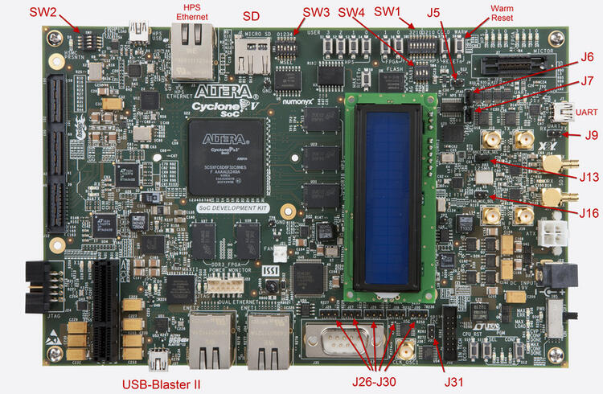
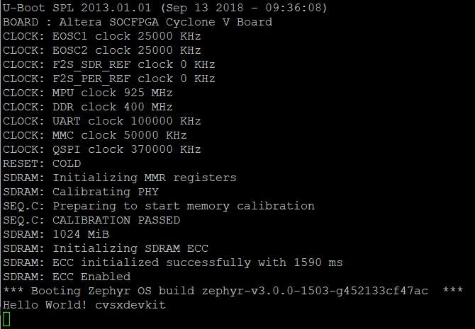

Intel® Cyclone® V SoC 开发套件
概述
Zephyr 内核支持 Intel® Cyclone® V SoC 开发套件，运行在其硬核处理器系统（HPS）CPU 上。

硬件
跳线和拨码开关设置
推荐的开发板设置与 Cyclone® V SoC 开发板的 GSRD 相同。
开发板背面有两组开关，其中 SW2 尤为重要。首先，需要按如下方式配置开发板跳线：
J5：断开
J6：短接
J7：短接
J9：断开
J13：短接
J16：断开
J26：短接引脚 1-2
J27：短接引脚 2-3
J28：短接引脚 1-2
J29：短接引脚 2-3
J30：短接引脚 1-2
J31：断开
然后，需要按如下方式配置开发板开关：
SW1: All OFF
SW2: All OFF
SW3: ON-OFF-ON-OFF-ON-ON
SW4: OFF-OFF-ON-ON
其他开关为用户开关，其位置取决于具体应用。有关跳线和开关的详细信息，请参阅开发套件用户手册
所需软件
使用该设备需要 Intel® Quartus® Prime SDK。Linux 版 Intel® Quartus® Prime Lite Edition 可以免费获取。
为方便使用 SDK 工具（例如 quartus_pgm），应将 SDK 提供的二进制文件加入 PATH。以下是一个示例，请将 ALTERA_BASE 调整为 SDK 的安装位置：
export QUARTUS_ROOTDIR=/opt/intelFPGA_lite/21.1
export PATH=$PATH:$QUARTUS_ROOTDIR/quartus/bin:$QUARTUS_ROOTDIR/programmer/bin
可能需要调整 udev 规则，才能与 USB Blaster II 外设（该设备的内置 JTAG 接口）通信。
以下方法适用于 Ubuntu：
# For Altera USB-Blaster permissions.
SUBSYSTEM=="usb",\
ENV{DEVTYPE}=="usb_device",\
ATTR{idVendor}=="09fb",\
ATTR{idProduct}=="6010",\
MODE="0666",\
NAME="bus/usb/$env{BUSNUM}/$env{DEVNUM}",\
RUN+="/bin/chmod 0666 %c"
SUBSYSTEM=="usb",\
ENV{DEVTYPE}=="usb_device",\
ATTR{idVendor}=="09fb",\
ATTR{idProduct}=="6810",\
MODE="0666",\
NAME="bus/usb/$env{BUSNUM}/$env{DEVNUM}",\
RUN+="/bin/chmod 0666 %c"
可以使用 SDK 的 jtagconfig 工具测试连接，应该会看到类似以下的输出：
$ jtagconfig
1) USB-BlasterII [1-5]
4ba00477 SOCVHPS
02D020DD 5ZSEBA6(.|ES)/5CSEMA6/..
黄金参考设计
黄金系统参考设计（GSRD）提供了一组基本的硬件和软件系统组件，可作为各种用户定制设计的起点。
Zephyr 对 Cyclone® V SoC 开发套件的支持基于 GSRD 硬件。请参阅 Intel® Cyclone® V SoC GSRD
本版本所用的硬件基于 Intel® Quartus® 21.1 版本，硬件文件可以在 此处 找到
目录 "cv_soc_devkit_ghrd" 包含创建 Intel® Quartus® 项目所需的文件：
ghrd_top.v：GSRD 的顶层 Verilog（HDL）文件
soc_system.qpf：Quartus® Prime 项目文件
soc_system.qsf：Quartus® Prime 设置文件
soc_system.qsys：Platform Designer 文件（包含 SoC 系统）
soc_system.sopcinfo：SOPC 信息文件，包含项目中实例化的模块、参数名称和取值等详细信息。
soc_system_timing.sdc：Synopsys 设计约束文件。
output_files/soc_system.sof：FPGA 配置文件。
使用 SDK 工具 quartus_pgm 烧录该 FPGA 配置文件（.sof）soc_system.sof：
$ quartus_pgm -m jtag -o "p;path/to/soc_system.sof"
该系统由 HPS（ARM Cortex-A9）构成。本示例开放了 UART、定时器、USB、I2C 和 DDR 内存。请仔细确认你打算使用的外设有对应的驱动支持。有关 Cyclone® V SoC 开发套件 GSRD 的更多信息，可以在 RocketBoards 上查找，或参阅《Cyclone® V Hard Processor System Technical Reference Manual》
控制台输出
16550 UART
默认情况下，内核配置为将控制台输出发送到 16550 UART。可以将工作站连接到开发板右上角的 mini USB 接口（J8/UART）（它会在 /dev 中显示为 ttyUSB 节点），然后运行 minicom/PuTTy，关闭流控并使用 115200-8N1 设置，即可在工作站上查看输出。
编程与调试
烧录
将内核烧录到开发板
常规的 flash 目标可用于 cyclonev_socdk 开发板配置。以下是 Hello World 应用程序的示例。
Important!!!：烧录开发板之前需要一个 preloader。可以下载 cv_soc_devkit_ghrd.tar.gz，解压该文件，然后将 cv_soc_devkit_ghrd/software/preloader/uboot-socfpga/spl/u-boot-spl 复制到 boards/intel/socfpga_std/cyclonev_socdk/support/
# From the root of the zephyr repository
west build -b cyclonev_socdk samples/hello_world
west flash
这会使用定制的 OpenOCD 运行器脚本 scripts/west_commands/runners/intel_cyclonev.py 将 Zephyr 内核和 CPU 配置写入开发板。完成后，内核会立即通过 GSRD preloader 启动。注意，有许多辅助文件用于通过 OpenOCD 和 GDB 调试器 flash 应用程序（机器上必须安装 Zephyr SDK）。这些文件应位于 boards/intel/socfpga_std/cyclonev_socdk/support/ 中，包括：
blaster_6810.hex：USB-BlasterII 固件
tmp_preloader_dl_cmd.txt：用于加载 preloader 的 GDB 辅助文件
tmp_appli_dl_cmd.gdb：用于加载 zephyr.elf 文件的 GDB 辅助文件
tmp_appli_debug_cmd.gdb：调试时用于加载 zephyr.elf 文件的 GDB 辅助文件
openocd.cfg：OpenOCD 的源配置文件
download_all.gdb：用于加载 preloader 的 GDB 辅助文件
u-boot-spl：Cyclone® V SoC 开发套件 GSRD preloader（从 GSRD 的 cv_soc_devkit_ghrd.tar.gz 中复制）
下图显示了使用 "hello world" 示例设计执行 "west flash" 后预期的（UART）输出：

调试
Zephyr SDK 包含一个 GDB 服务器，可用于调试 Cyclone® V SoC 开发套件开发板。既可以调试已烧录到设备用户 Flash 存储器（UFM）中并正在运行的镜像，也可以使用 GDB 通过 JTAG 加载镜像。
调试已烧录的镜像
可以按常规方式调试应用程序。以下是一个示例。
# From the root of the zephyr repository
west build -b cyclonev_socdk samples/hello_world
west debug
你会看到类似以下的输出：
-- west debug: rebuilding
ninja: no work to do.
-- west debug: using runner intel_cyclonev
-- runners.intel_cyclonev: OpenOCD GDB server running on port 3333; no thread info available
Open On-Chip Debugger 0.11.0+dev-00244-g7e3dbbbe2 (2021-11-18-07:14)
Licensed under GNU GPL v2
For bug reports, read http://openocd.org/doc/doxygen/bugs.html
Info : only one transport option; autoselect 'jtag'
cycv_dbginit
Info : Listening on port 6666 for tcl connections
Info : Listening on port 4444 for telnet connections
Info : Altera USB-Blaster II (uninitialized) found
Info : Loading firmware...
Info : Waiting for reenumerate...
Info : Waiting for reenumerate...
Info : Altera USB-Blaster II found (Firm. rev. = 1.39)
Info : This adapter doesn't support configurable speed
Info : JTAG tap: fpgasoc.fpga.tap tap/device found: 0x02d020dd (mfg: 0x06e (Altera), part: 0x2d02, ver: 0x0)
Info : JTAG tap: fpgasoc.cpu tap/device found: 0x4ba00477 (mfg: 0x23b (ARM Ltd), part: 0xba00, ver: 0x4)
Info : DAP transaction stalled (WAIT) - slowing down
Info : DAP transaction stalled (WAIT) - slowing down
Info : fpgasoc.cpu.0: hardware has 6 breakpoints, 4 watchpoints
Info : starting gdb server for fpgasoc.cpu.0 on 3333
Info : Listening on port 3333 for gdb connections
Info : accepting 'gdb' connection on tcp/3333
Info : fpgasoc.cpu.0 rev 0, partnum c09, arch f, variant 3, implementor 41
Info : fpgasoc.cpu.0: MPIDR level2 0, cluster 0, core 0, multi core, no SMT
target halted in ARM state due to debug-request, current mode: Supervisor
cpsr: 0x600001d3 pc: 0x00002fa4
MMU: disabled, D-Cache: disabled, I-Cache: enabled
warning: No executable has been specified and target does not support
determining executable automatically. Try using the "file" command.
0x00002fa4 in ?? ()
Restoring section .text (0xffff0000 to 0xffff6f84)
Info : DAP transaction stalled (WAIT) - slowing down
Warn : keep_alive() was not invoked in the 1000 ms timelimit. GDB alive packet not sent! (1469 ms). Workaround: increase "set remotetimeout" in GDB
Restoring section .rodata (0xffff6f84 to 0xffff8af9)
Restoring section .data (0xffff8b00 to 0xffff99d4)
Info : DAP transaction stalled (WAIT) - slowing down
Hardware assisted breakpoint 1 at 0xffff147e
Info : fpgasoc.cpu.0 rev 0, partnum c09, arch f, variant 3, implementor 41
fpgasoc.cpu.0 rev 0, partnum c09, arch f, variant 3, implementor 41
Temporary breakpoint 1, 0xffff147e in spl_boot_device ()
[Inferior 1 (Remote target) detached]
Info : dropped 'gdb' connection
shutdown command invoked
Open On-Chip Debugger 0.11.0+dev-00244-g7e3dbbbe2 (2021-11-18-07:14)
Licensed under GNU GPL v2
For bug reports, read http://openocd.org/doc/doxygen/bugs.html
Info : only one transport option; autoselect 'jtag'
cycv_dbginit
Info : Listening on port 6666 for tcl connections
Info : Listening on port 4444 for telnet connections
Info : Altera USB-Blaster II found (Firm. rev. = 1.39)
Info : This adapter doesn't support configurable speed
Info : JTAG tap: fpgasoc.fpga.tap tap/device found: 0x02d020dd (mfg: 0x06e (Altera), part: 0x2d02, ver: 0x0)
Info : JTAG tap: fpgasoc.cpu tap/device found: 0x4ba00477 (mfg: 0x23b (ARM Ltd), part: 0xba00, ver: 0x4)
Info : DAP transaction stalled (WAIT) - slowing down
Info : DAP transaction stalled (WAIT) - slowing down
Info : fpgasoc.cpu.0: hardware has 6 breakpoints, 4 watchpoints
Info : fpgasoc.cpu.0 rev 0, partnum c09, arch f, variant 3, implementor 41
Info : fpgasoc.cpu.0: MPIDR level2 0, cluster 0, core 0, multi core, no SMT
Info : starting gdb server for fpgasoc.cpu.0 on 3333
Info : Listening on port 3333 for gdb connections
Info : accepting 'gdb' connection on tcp/3333
warning: No executable has been specified and target does not support
determining executable automatically. Try using the "file" command.
0xffff147c in ?? ()
warning: /home/demo/zephyrproject/zephyr/boards/intel/socfpga_std/cyclonev_socdk/support/tmp_appli_debug_cmd.gdb: No such file or directory
[Inferior 1 (Remote target) detached]
Info : dropped 'gdb' connection
shutdown command invoked
Open On-Chip Debugger 0.11.0+dev-00244-g7e3dbbbe2 (2021-11-18-07:14)
Licensed under GNU GPL v2
For bug reports, read http://openocd.org/doc/doxygen/bugs.html
Info : only one transport option; autoselect 'jtag'
cycv_dbginit
Info : Listening on port 6666 for tcl connections
Info : Listening on port 4444 for telnet connections
Info : Altera USB-Blaster II found (Firm. rev. = 1.39)
Info : This adapter doesn't support configurable speed
Info : JTAG tap: fpgasoc.fpga.tap tap/device found: 0x02d020dd (mfg: 0x06e (Altera), part: 0x2d02, ver: 0x0)
Info : JTAG tap: fpgasoc.cpu tap/device found: 0x4ba00477 (mfg: 0x23b (ARM Ltd), part: 0xba00, ver: 0x4)
Info : DAP transaction stalled (WAIT) - slowing down
Info : DAP transaction stalled (WAIT) - slowing down
Info : fpgasoc.cpu.0: hardware has 6 breakpoints, 4 watchpoints
Reading symbols from /home/demo/zephyrproject/zephyr/build/zephyr/zephyr.elf...
Info : fpgasoc.cpu.0 rev 0, partnum c09, arch f, variant 3, implementor 41
Info : fpgasoc.cpu.0: MPIDR level2 0, cluster 0, core 0, multi core, no SMT
Info : starting gdb server for fpgasoc.cpu.0 on 3333
Info : Listening on port 3333 for gdb connections
Remote debugging using :3333
Info : accepting 'gdb' connection on tcp/3333
main () at /home/demo/zephyrproject/zephyr/samples/hello_world/src/main.c:11
11 printk("Hello World! %s\n", CONFIG_BOARD);
(gdb)
尝试其他示例
有多种示例可以下载到 Cyclone® V SoC FPGA 开发套件开发板上。试试从芯片的 HPS 端让一个 LED blink：
# From the root of the zephyr repository
west build -b cyclonev_socdk samples/basic/blinky
west flash

试试向连接在 i2c 总线上的 LCD 显示屏写入字符：
# From the root of the zephyr repository
west build -b cyclonev_socdk samples/drivers/lcd_cyclonev_socdk
west flash